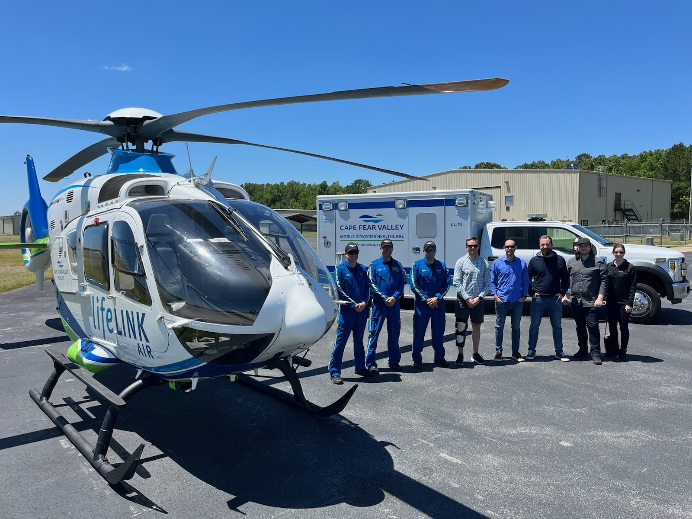

Conducting thorough research throughout the entire journey to identify the right solution.
A medical company saw an opportunity to design a new console that controls monitors for an Impella device inserted in a patient's heart. The console is used in hospitals and while in transit between facilities. The goal was to redesign the console to be better, more efficient, and more user-friendly than the one currently used in the medical industry.
To achieve this objective, extensive interviews and on-site research were conducted with various medical personnel who would interact with the device during its use cases. The environments where it would be used were also evaluated, including surgical rooms and medical vehicles, such as ground and air transportation, highlighting key paing points and current user issues.
Gathering this data enabled us to create a detailed analysis of the console's journey during specific use cases. This information clarified which personnel would use it, how they would interact with it, and where it would be utilized. We developed a journey map and user profiles to communicate the needs and features of the newly designed console.